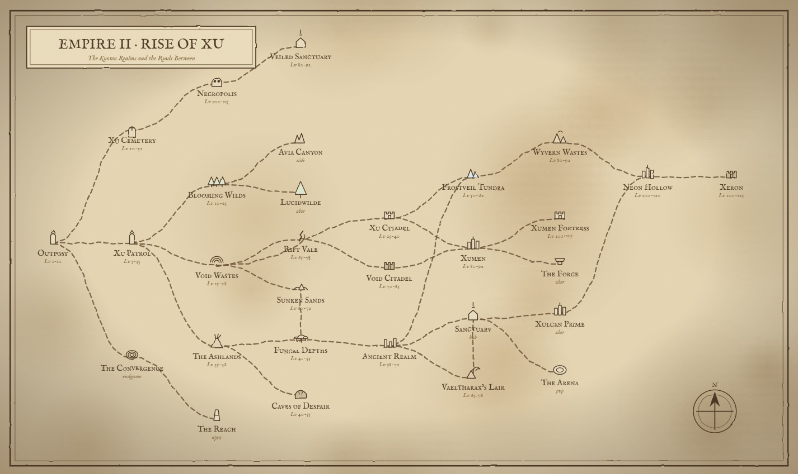

Browser Action RPG · Free to Play · No Download
Fight through 31 zones. Slay 53 bosses. Build your legend.
Real-time combat. Multiplayer co-op. Endgame that will destroy you.
One World · 31 Zones

From the Xu Outpost to The Reach at the end of all things — every zone, and every road between them. Difficulty climbs as you journey outward. Tap the map to view full size
Free to Play · No Download · No Account
Custom score. Every shot is real gameplay from Empire 2: Rise of Xu.
31 zones. 53 bosses. The Convergence. The Reach. The Lucidwilde. Xulcan Prime. Endgame that will destroy you.
PLAY NOW — FREEOpens in a new tab on itch.io · Playable in any browser
Core Systems
Play it your way. A single mouse wheel zooms through three perspectives — first-person, third-person, and the classic isometric overhead. Scroll in for first-person aim, out for the overhead view; you start in third-person. See the camera guide →
v93.0 CAMERAThe endgame maze where reality cracked when Overseer Zero died. Every run is a fresh labyrinth, and every depth ends in its own boss — the Depth Sentinel, the Depth Inferno, the Archon, Xerathor, the Overseer and the Forest Ancient. Twenty-four creature types fight with their own abilities, modifiers stack as you descend and a cataclysm lands every fifth depth. Kill the boss, take the magenta portal, go deeper.
v93.0 ENDGAMEConvergence-only currency that persists across deaths. Spend at The Archivist in the Outpost — a 15-node meta-progression tree across three tiers. Tier I boosts you forever; Tier II buffs you only in the Convergence; Tier III is game-changing (Glass Cannon, Lucky Star, Boss Slayer, Reroll Token).
v93.0 METAA 9th equipment slot, fully evolved. Eleven items from Tallow (common) to mythics like Aether Beacon (drops light puddles on damage), Aether Forge (AOE damage burst every 12s), Communal Lantern (scales with party size). Plus 10 lightstone-only affixes: Pulsing (orb throbs), Iridescent (rainbow shift), Burning (damages enemies in range). MP-synced — your party glows too.
v93.0 PHASE 2Four races carry an active ability on E: the Xu’s Crest Flare fears nearby enemies, the Vampire’s Void-Step teleports five tiles, the Minotaur’s Vreth Stance roots you for 50% damage reduction and 30% reflect, and the Ogre’s War Chant hastes nearby allies. Gnomes fight beside an automaton, Centaurs charge, and Elves see enemies through walls. 32 racial traits in all.
v93.0 RACESEvery depth of the Convergence ends in its own boss, rebuilt in a766 with living plasma cores, real fire and lightning and a gesture for every attack. They run from 2.8M HP at Depth 1 to 5.6M at Depth 6, and each drops a full set of its own: a greatsword, a one-hander, a staff, a ranged weapon, a helm, chest, legs, boots, ring and amulet.
a766 BOSSESClick to attack, aim with the mouse. Chain hits into x3, x6 and x10 combos for +15%, +30% and +50% damage. Dodge-roll through attacks, block with a shield, or fire an off-hand bow or gun.
COREReal-time co-op hosted on the game server — works on any network. Create or join games from the lobby. Party up to 4. If the host leaves, the game carries on.
ONLINEEvery race brings 4 hand-built traits — 3 powers and 1 weakness. Stacked with 4 class kits (Warrior, Mage, Healer, Rogue), no two builds play the same.
BUILDSocket rubies, sapphires, emeralds, topaz, amethysts and void gems into gear. 75 crafting recipes across the weapon, armour, jewellery and alchemy benches, and every piece of gear upgrades to +10.
CRAFTINGHit level 100 and unlock powers beyond the cap. Shadow Step, Assassinate, Aether Surge, Iron Will and more.
ENDGAMEFrom the ruined Outpost to The Reach at the end of all things. Hand-crafted zones from the Lv 5 Patrol to the Lv 110 Veiled Sanctuary raid, plus the procedural Convergence maze, the golden Xu metropolis of Xulcan Prime, and the one-way red rift to the final zone.
WORLDForm guilds with up to 50 members. Real-time guild chat, MOTD, persistent guild XP. Level perks unlock at Lv 2/3/5/7: +20% XP, +15% gold, epic loot boost.
SOCIAL98 achievements scaling from first kill to 100,000-kill empire slayer, and 59 titles like “the Reaper” or “Apex Conqueror” to display above your name.
PROGRESSION7-day cycling reward calendar. Gold, potions, gems, legendary loot. Build a streak — miss a day, it resets. Unlock the "Devoted" title at 30 days.
RETENTIONKill enough in any zone and a pink portal can open into an Apex Trial, tiered I to VIII by the zone’s level, with stacking modifiers — Burning, Frozen, Charged, Toxic, Swarm, Cursed, Mirrored. Each tier ends in its own boss with a full gear set at that tier’s level. Spend the shards you earn at the Curator’s Apprentice.
v92.13–v92.73Seven cross-zone roaming bosses — Forge Tyrant, Eyexor, Hollow Reaper, Void Behemoth, Abacus of Flesh, the Overseer of Discord, and Electronoid. The first appears a few minutes after you log in, then one every 5 minutes, and each stays for 4. Every one drops its own full set — all four weapon types plus a full set of armour — with an Apex Shard and bonus gold, and grows tougher the more players fight it.
v92.20 · a156Every boss in the game — zone, world, rare and Apex Trial — drops a complete set of its own: a greatsword, a one-hander, a staff, a ranged weapon, a helm, chest, legs, boots, ring and amulet, each with its own model and its own look on your character. Drops lean toward your class: a weapon you can wield is about one kill in four.
a768 LOOTDeath-proof savings. Deposit gold safely — die and lose 15% of your wallet, but vault gold survives. No fees. Per-character storage that persists through every wipe.
v92.25Six-tier shard currency dropped from Apex Trials and World Bosses. Trade at the Curator's Apprentice for 25 dungeon-only legendaries — including the Lich Sovereign's Scepter and Frostfang of the Sovereign.
v92.16–v92.17Every legendary staff fires a different bolt. Voidheart pulses purple void. Dragonbreath leaves an ember trail. Architect orbits 4 crystal shards. Lich Sovereign's Scepter shoots a black hole with 3 counter-rotating coronas.
v92.33Master / Music / SFX sliders, mute toggle, M-key shortcut, per-character settings. Six new dedicated zone tracks — Cemetery, Necropolis, Void Citadel, Caves of Despair, Neon Hollow, Xumen Fortress — each musically distinct.
v92.31Full Xbox & PlayStation controller support via the Web Gamepad API. Right stick aim, twin-stick combat, all panels accessible. Toggleable in Settings.
v91.1The molten foundry where the Xu forged their war machines — a Lv 95 industrial hellscape of lava channels, conveyor lines and a central reactor arena. Four new foundry mobs (Molten Crawlers, Lava Forged Sentinels, Forge Technicians, Industrial Devastators) guard the approach to THE FURNACE CORE, a colossal weak-point boss. Drops the Obsidian Forge set — black volcanic glass veined with lava — plus the Cindercleaver, Magmabreaker, Pyrelith Scepter and Aegis of the Forge.
a366 NEW ZONEA pre-Xu fey garden the war never reached. Lv 10+ entry zone accessed from north Patrol. Six new enemies — Bloom Sprites, Glimmer Fairies, Mushroom Brutes, Vine Stalkers, Pollen Wraiths, Thorn Knight mini-boss. The Wildmother sleeps at the heart, an ancient willow tree-being with vine arms and floating moonstones.
v92.49Hidden raid accessed from the Necropolis. Lv 90+ recommended. A monastery where the Forsaken Order tried to seal a void rift and got frozen mid-prayer. Heavy purple-gold thunderstorm with sacred lightning. Drifting void tornadoes that damage on contact. Eight unique enemies + The Final Abbot at the heart, halo and twin censer-staves.
v92.37–v92.46Inventory panel is now draggable + resizable + persistent — move it anywhere, save layout per character. Drag potions onto the item bar (Z X C V G) or Shift+Right-click to auto-assign. All 9 ascendancy actives now functional with smart U + Shift+U binding.
v92.47–v92.53Choose Your Heritage
Every race brings four hand-built traits — three powerful, one weakness. Pick your heritage carefully. Active skills in blue, passives in green, flaws in red.
They Are Waiting
32 lair bosses · 7 roaming world bosses · plus 6 rare spawns and 8 Apex Trial bosses in the wiki
Active Development
Patch notes · Updated regularly
Live patch notes from the in-game changelog · Play the latest build
The Dominion Awaits
PLAY FREE NOW